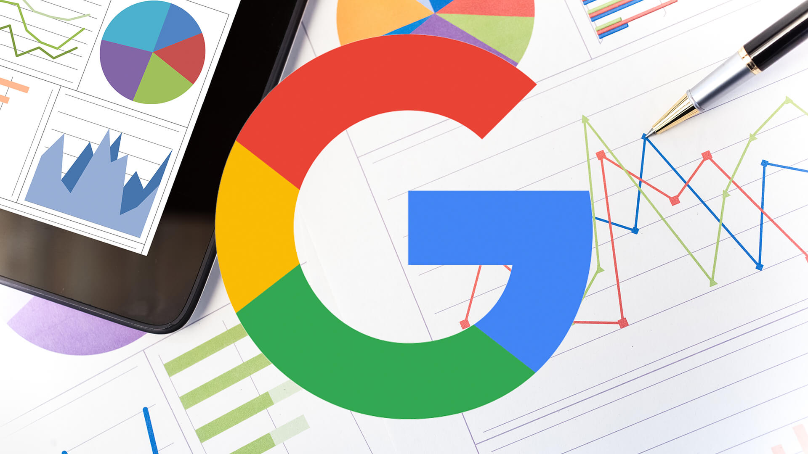
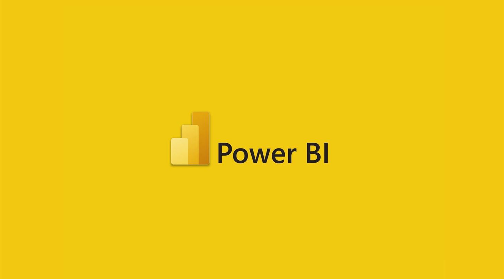

In this project I analysed data for a bikeshare company.
This project focused on deriving key insights into understanding the ridership patterns and behavior
among Cyclistic's riders by utilizing spreadsheets, SQL, Tableau and R

In this project I developed an interactive Tableau dashboard to analyze car sales performance.
The dashboard features dynamic visualizations including line, pie, doughnut, and bar charts, along with a table showing
sales trends by car brand. Custom filters allow users to explore the data by date, transmission, body style, engine, and gender.
.jpeg)
In this project I built a machine learning model using Python for Salifort Motors
This project focused on building a model that can help Salifort motors accurately predict employee turnover
by utilizing Logistic Regression, Decision Tree, and Random Forest Models
.jpeg)
.jpeg)
In this project I developed a machine learning model using Python to classify TikTok vidoes as claims or opinions.
Data preprocessing, feature extraction, and model training were implemented to achieve high accuracy.
In this project I utilized R and statistical techniques,
including hypothesis testing and regression analysis, to analyze customer behavior and spending patterns,
providing actionable insights for RetailCo's marketing strategies.
In this project I analysed diabetes trends using R
I performed thorough data cleaning, exploratory data analysis, and created insightful visualizations,
from which recommendations were developed for future findings

In this project I analysed global terrorim trends using Power BI.
I analyzed a comprehensive dataset on global terrorism from 1970-2017, to uncover trends and patterns in terrorism worldwide.
In this project I identified trends and analyzed performance metrics for popular YouTube streamers
I utilized Excel, Tableau and R to perform the analysis and visualization.

This project explores the potential of starting an AirBnB business in Seattle using Tableau
It delves into key factors affecting profitability, including location, number of bedrooms, and potential earnings

This project utilizes Power BI to visualize insights from a survey dataset on data proessionals